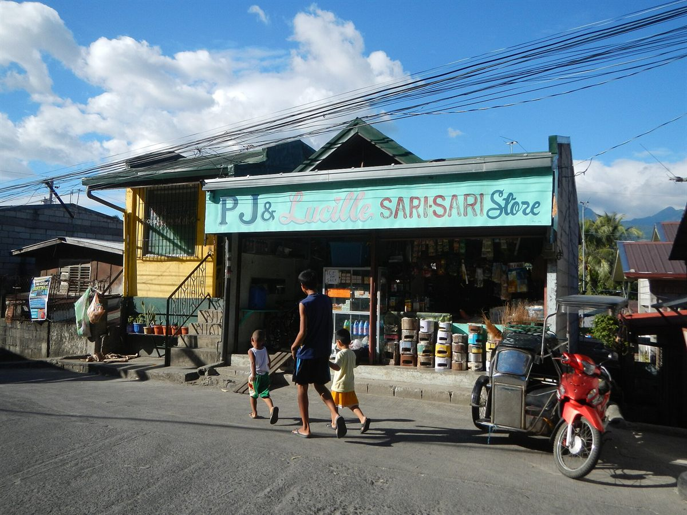

Signs & labels
Hand-painted signs and loud packaging as vernacular design.
From painted store names to “Bawal ang utang, bukas pwede,” the sari-sari store is full of everyday Filipino design and humor.
Ano’ng sasagutin ng kwentong ito
- Who paints the store signs, and how are they made?
- What do handwritten notices say, and why are they funny?
- What makes the packaging on the shelf so loud?
Look at a sari-sari store from across the street, before you read anything. First you see color: a painted signboard, a bright awning, packaging on every inch of the shelf. The store is designed from the outside in.
Many store names are painted by hand, often after the family who runs the store. The letters may be uneven, outlined, with a shadow. This is design without a design brief. It has to be read from the road, cost little, and be easy to repaint, and that is exactly why it works.
Then there are the handwritten notices on cardboard, like “Bawal ang utang, bukas pwede.” They say a rule and a joke at once. Humor lets the tindera set a limit without starting an argument with a neighbor she will see again tomorrow.
The packaging on the shelf is loud for a different reason. Hanging strips, bold type and strong colors all compete for the eye in a very small space. We borrowed those colors for this site: the red of the signs, the yellow of the sachets and the teal of the painted walls.
Design historians describe vernacular design as “artistic and technical expression broadly characteristic of a locale or historical period.” In the Philippines that includes the hand-painted signs that bus and jeepney drivers buy from roadside painters. It is the design most of us actually grew up reading.

“Napansin mo rin pala ’yung mga karatula.”
Pinagkunan
Meggs, P. B., & Purvis, A. W. (2012). Meggs’ History of Graphic Design (5th ed.), p. 475. John Wiley & Sons.
Balaguer, L. (2016, May 3). Tropico Vernacular. Triple Canopy.
Pahina 4 / 5